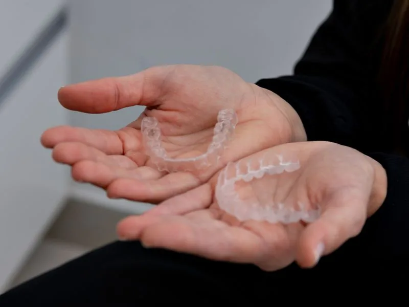
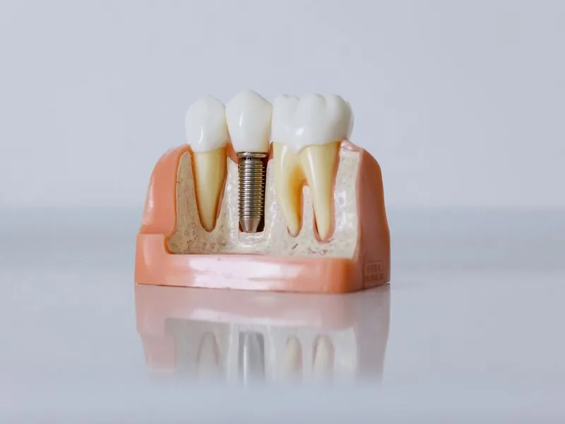

Excelência inspirada pela precisão japonesa
Odontologia que une ciência, tecnologia e um cuidado genuinamente humano. Mais do que tratar dentes, cuidamos de pessoas.
A odontologia tem o poder de transformar vidas
Acreditamos que a odontologia tem o poder de transformar vidas.
Nossa missão é ajudar cada paciente a alcançar a sua melhor versão, promovendo saúde, confiança e qualidade de vida por meio de uma odontologia de excelência, baseada em ciência, tecnologia, ética e um cuidado genuinamente humano.
Na Fukuoka Dental Clinic, cada sorriso é tratado com precisão, respeito e dedicação, porque acreditamos que transformar um sorriso é também transformar a forma como uma pessoa vive, sorri e se relaciona com o mundo.
Cuidado planejado para cada necessidade
Do alinhamento discreto à reabilitação completa, com planejamento digital e abordagem minimamente invasiva.

Invisalign®
Alinhadores transparentes e removíveis, planejados digitalmente.
Saiba mais
Implantes dentários
Reposição de dentes com cirurgia guiada e planejamento tomográfico.
Saiba mais
Clareamento dental
Protocolos supervisionados, com controle de sensibilidade.
Saiba mais
Reabilitação oral
Devolução de função e estética em casos complexos.
Saiba mais
Estética: lentes e facetas
Laminados cerâmicos com preservação máxima do dente natural.
Saiba maisDra. Cíntia Fukuoka
Cada paciente chega com uma história e um motivo. Na Fukuoka Dental Clinic, o tempo dedicado a ouvir vem antes de qualquer proposta de tratamento — porque o plano só é bom quando cabe na vida de quem o recebe.
Mais do que tratar dentes, cuidamos de pessoas
Acreditamos que um sorriso vai muito além da estética. Ele reflete saúde, confiança, autoestima e uma expressão genuína de bem-estar.
Na Fukuoka Dental Clinic, cada paciente é único. Por isso, dedicamos tempo para ouvir com atenção, compreender com profundidade e desenvolver planos de tratamento personalizados, fundamentados em ciência de excelência, tecnologia avançada e absoluto respeito às escolhas individuais.
O que orienta cada decisão
-
Fé
Acreditamos que sempre há um caminho para oferecer o melhor cuidado aos nossos pacientes.
-
Humildade
Buscamos aprender continuamente para evoluir como profissionais e como pessoas.
-
Gratidão
Valorizamos cada paciente, cada oportunidade de cuidar e cada conquista ao longo da nossa trajetória.
-
Respeito
Tratamos todas as pessoas com empatia, ética, atenção e dignidade.
-
Excelência
Buscamos os mais altos padrões de qualidade em cada atendimento, unindo conhecimento, tecnologia e dedicação.
Veja por que tantos pacientes confiam na Fukuoka
5,029 avaliações no Google
Sou paciente da Dra. Cíntia desde 2013 e posso afirmar que ela é uma profissional referência dentro e fora do Brasil em implantes dentários, cirurgia e estética, aliando conhecimento técnico, experiência e atendimento humanizado de altíssimo nível.
Seu comprometimento com a prática odontológica e a área acadêmica é admirável, sempre buscando atualização e inovação. Seu reconhecimento internacional, com atuação no Japão e na Europa, comprovam sua credibilidade e expertise.
Atuando na região da Avenida Paulista recomendo a Dra. Cíntia com total confiança para quem busca qualidade, segurança e resultados excepcionais. Uma profissional diferenciada e verdadeiramente comprometida com o paciente e a excelência nas entregas.
A Cintia foi a melhor indicação de dentista que já recebi na vida! Assim como me indicaram, a indico sem sombra de dúvidas com confiança desde 2021!
Além de sua atenção e cuidado, seu excelente profissionalismo e competência com suas qualificações ímpares trazem conforto em saber que está sendo cuidado por quem sabe o que está fazendo.
Fiz meu planejamento digital e estética Invisalign e estou muito feliz com o processo, sem igual. E melhor ainda por ser na Paulista é fácil de chegar sem desculpas de ser difícil de ir se cuidar 🙂
A Dra Cintia é uma ótima dentista, recomendo para todos! É atenciosa, muito qualificada e possui todos os equipamentos para tratamento e os melhores materiais. O consultório é aconchegante e fácil de achar! É pertissimo da Paulista.
Sou paciente faz anos e não troco de dentista! ❤️
Atendimento em japonês
A comunidade japonesa em São Paulo encontra aqui atendimento na própria língua, com o rigor técnico e a cortesia que espera.
Para decidir com informação
Invisalign: como funciona o tratamento
Do escaneamento digital à contenção final, o que esperar de cada etapa.
Ler artigoImplante dentário: o passo a passo
Avaliação, cirurgia guiada, osseointegração e prótese definitiva.
Ler artigoClareamento dental seguro
Por que a supervisão profissional muda o resultado e protege o esmalte.
Ler artigoAgende sua consulta
Fale com a nossa equipe pelo WhatsApp e encontre um horário que caiba na sua rotina.
Endereço
Praça Oswaldo Cruz, 47, conj. 43
Paraíso · São Paulo/SP
Horários
Segunda a sexta, 9h às 19h
Sábado, 9h às 13h